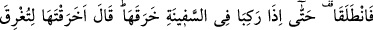
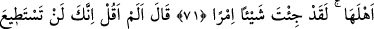
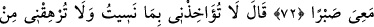
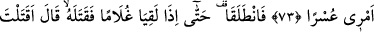
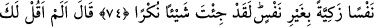
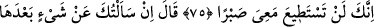
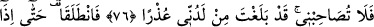
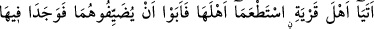
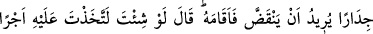
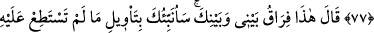
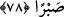
MÛSÂ (A.S) İLE
HIZIR (A.S)’IN YOLCULUĞU
71. Bunun üzerine yürüdüler. Nihâyet gemiye bindikleri zaman o (Hızır) gemiyi
deldi. Mûsâ: “Halkını boğmak için mi onu deldin? Gerçekten sen (ziyanı) büyük bir
iş yaptın!” dedi.
72. (Hızır:) “Ben sana, benimle beraberliğe sabredemezsin, demedim mi?” dedi.
73. Mûsâ: “Unuttuğum şeyden dolayı beni muaheze etme; işimde bana güçlük
çıkarma.” dedi.
74. Yine yürüdüler. Nihâyet bir erkek çocuğa rastladıklarında (Hızır) hemen onu
öldürdü. Mûsâ dedi ki: “Tertemiz bir canı, bir can karşılığı olmaksızın (kimseyi
öldürmediği halde) katlettin ha! Gerçekten sen fena bir şey yaptın!”
75. (Hızır:) “Ben sana, benimle beraber (olacaklara) sabredemezsin, demedim
mi?” dedi.
76. Mûsâ: “Eğer bundan sonra sana bir şey sorarsam artık benimle arkadaşlık
etme. Hakîkaten benim tarafımdan (ileri sürebilecek) mazeretin sonuna ulaştın.”
dedi.
77. Yine yürüdüler. Nihâyet bir köy halkına varıp onlardan yiyecek istediler.
Ancak köy halkı onları misafir etmekten kaçındılar. Derken orada yıkılmak üzere
bulunan bir duvarla karşılaştılar. (Hızır) hemen onu doğrulttu. Mûsâ: “Dileseydin,
elbet buna karşı bir ücret alırdın.” dedi.